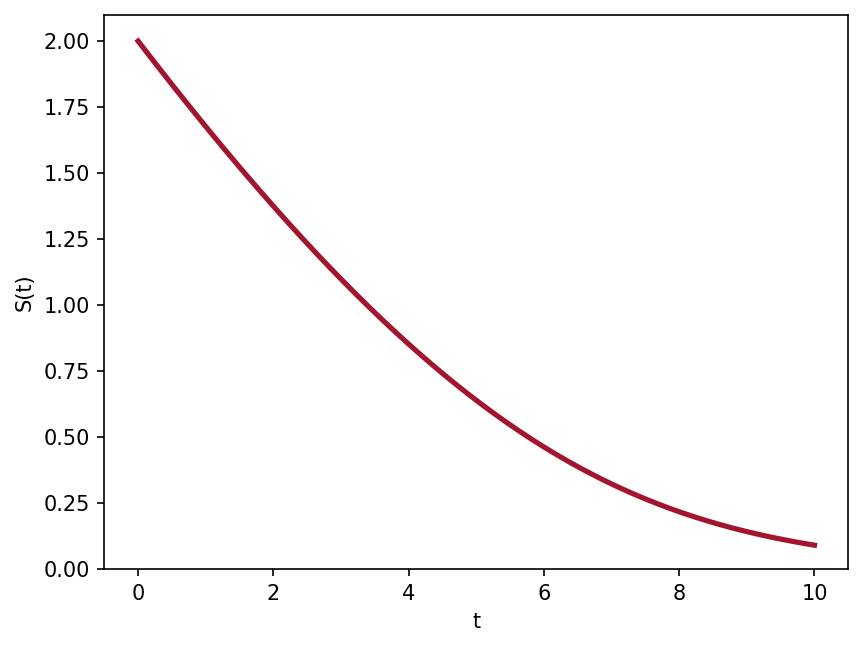
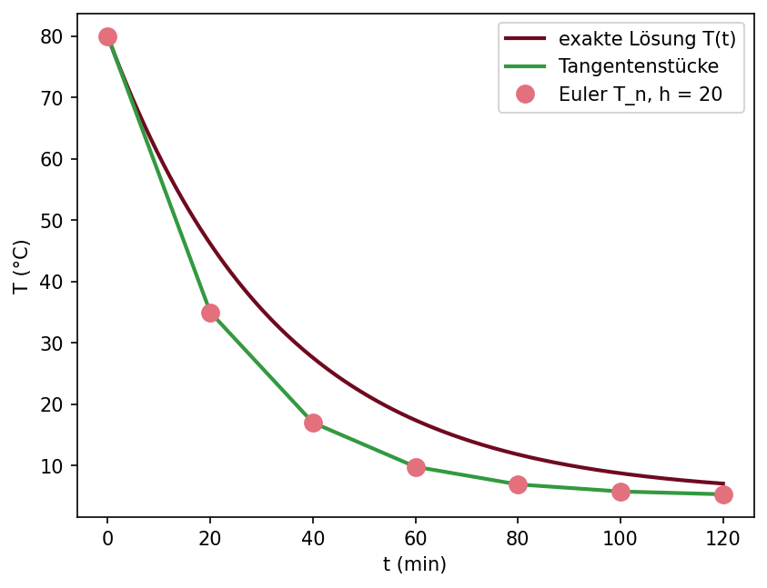
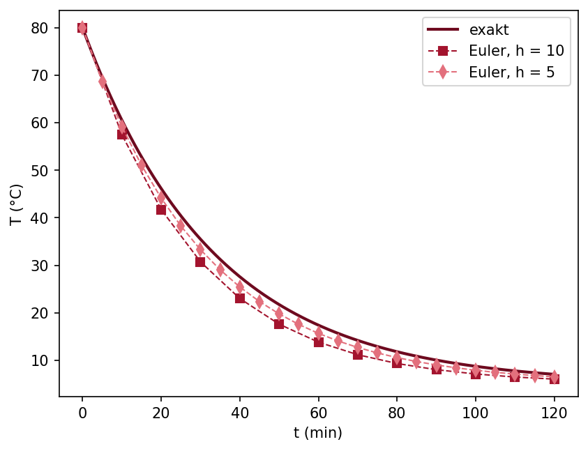
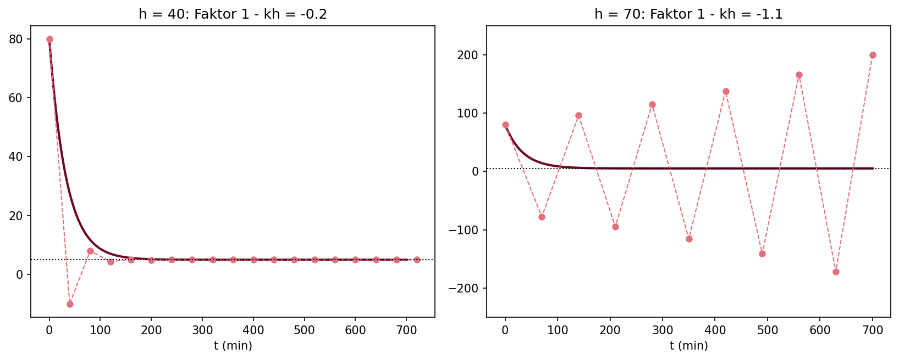

Kapitel 3 · Kontinuierliche dynamische Systeme mit einer Variablen
3.4Euler-Verfahren
Die meisten Differentialgleichungen lassen sich nicht geschlossen lösen. Das Euler-Verfahren ersetzt die Lösung durch kurze Geradenstücke mit der Steigung des Richtungsfelds: xn+1 = xn + h f(tn, xn). Kleinere Schrittweiten h liefern genauere Näherungen; zu große Schrittweiten können das Verfahren instabil machen.
Zu jeder Abbildung des Abschnitts finden Sie das Programm, das sie erzeugt. Ändern Sie Parameter und Startwerte und beobachten Sie, was passiert. Abbildungs- und Gleichungsnummern beziehen sich auf das Buch.
Abb. 3.19
Michaelis-Menten-Kinetik
dS/dt = −kmax S/(k50 + S), h = 0.01
Für diese Gleichung gibt es keine Lösungsformel mit elementaren Funktionen. Die Schleife berechnet die Näherung in 1000 Euler-Schritten.

# Abb. 3.19: Michaelis-Menten-Kinetik, Näherungslösung mit dem Euler-Verfahren (Buch, Abschnitt 3.4, Gl. 3.24 und 3.26)
# dS/dt = -kmax S/(k50 + S) mit kmax = 0.5, k50 = 1, S(0) = 2; Euler-Verfahren S_{n+1} = S_n + h f(S_n) mit h = 0.01
# (c) 2026 Philipp Kügler · Programm zum Buch „Dynamische Systeme in den Lebenswissenschaften“ · MIT-Lizenz (siehe LICENSE)
using Printf, Plots
kmax = 0.5; k50 = 1
f(S) = -kmax * S / (k50 + S)
h = 0.01; T = 10
N = round(Int, T / h)
t = h .* (0:N)
S = zeros(N + 1); S[1] = 2
for n in 1:N
S[n + 1] = S[n] + h * f(S[n]) # ein Euler-Schritt
end
for tt in (2, 5, 10)
@printf("S(%2d) ≈ %.4f\n", tt, S[round(Int, tt / h) + 1])
end
display(plot(t, S, color = RGB(0.64, 0.08, 0.18), lw = 2.5, legend = false, ylims = (0, 2.1), xlabel = "t", ylabel = "S(t)"))% Abb. 3.19: Michaelis-Menten-Kinetik, Näherungslösung mit dem Euler-Verfahren (Buch, Abschnitt 3.4, Gl. 3.24 und 3.26)
% dS/dt = -kmax S/(k50 + S) mit kmax = 0.5, k50 = 1, S(0) = 2; Euler-Verfahren S_{n+1} = S_n + h f(S_n) mit h = 0.01
% (c) 2026 Philipp Kügler · Programm zum Buch „Dynamische Systeme in den Lebenswissenschaften“ · MIT-Lizenz (siehe LICENSE)
kmax = 0.5; k50 = 1;
f = @(S) -kmax * S / (k50 + S);
h = 0.01; T = 10;
N = round(T / h);
t = h * (0:N);
S = zeros(1, N + 1); S(1) = 2;
for n = 1:N
S(n + 1) = S(n) + h * f(S(n)); % ein Euler-Schritt
end
for tt = [2 5 10]
fprintf('S(%2d) ≈ %.4f\n', tt, S(round(tt / h) + 1));
end
plot(t, S, 'Color', [0.64 0.08 0.18], 'LineWidth', 2.5);
xlabel('t'); ylabel('S(t)'); ylim([0 2.1]);# Abb. 3.19: Michaelis-Menten-Kinetik, Näherungslösung mit dem Euler-Verfahren (Buch, Abschnitt 3.4, Gl. 3.24 und 3.26)
# dS/dt = -kmax S/(k50 + S) mit kmax = 0.5, k50 = 1, S(0) = 2; Euler-Verfahren S_{n+1} = S_n + h f(S_n) mit h = 0.01
# (c) 2026 Philipp Kügler · Programm zum Buch „Dynamische Systeme in den Lebenswissenschaften“ · MIT-Lizenz (siehe LICENSE)
import numpy as np
import matplotlib.pyplot as plt
kmax, k50 = 0.5, 1
f = lambda S: -kmax * S / (k50 + S)
h, T = 0.01, 10
N = int(round(T / h))
t = h * np.arange(N + 1)
S = np.zeros(N + 1); S[0] = 2
for n in range(N):
S[n + 1] = S[n] + h * f(S[n]) # ein Euler-Schritt
for tt in [2, 5, 10]:
print(f"S({tt:2d}) ≈ {S[int(round(tt / h))]:.4f}")
plt.plot(t, S, color=(0.64, 0.08, 0.18), lw=2.5)
plt.xlabel("t"); plt.ylabel("S(t)"); plt.ylim(0, 2.1)
plt.show()# Abb. 3.19: Michaelis-Menten-Kinetik, Näherungslösung mit dem Euler-Verfahren (Buch, Abschnitt 3.4, Gl. 3.24 und 3.26)
# dS/dt = -kmax S/(k50 + S) mit kmax = 0.5, k50 = 1, S(0) = 2; Euler-Verfahren S_{n+1} = S_n + h f(S_n) mit h = 0.01
# (c) 2026 Philipp Kügler · Programm zum Buch „Dynamische Systeme in den Lebenswissenschaften“ · MIT-Lizenz (siehe LICENSE)
kmax <- 0.5; k50 <- 1
f <- function(S) -kmax * S / (k50 + S)
h <- 0.01; T <- 10
N <- round(T / h)
t <- h * (0:N)
S <- numeric(N + 1); S[1] <- 2
for (n in 1:N) S[n + 1] <- S[n] + h * f(S[n]) # ein Euler-Schritt
for (tt in c(2, 5, 10)) cat(sprintf("S(%2d) ≈ %.4f\n", tt, S[round(tt / h) + 1]))
plot(t, S, type = "l", col = rgb(0.64, 0.08, 0.18), lwd = 2.5, ylim = c(0, 2.1), xlab = "t", ylab = "S(t)")Ausgabe im Befehlsfenster
S( 2) ≈ 1.3746
S( 5) ≈ 0.6393
S(10) ≈ 0.0905Abb. 3.20
Euler-Schritte entlang der Tangenten
Tn+1 = Tn + h · 0.03 (5 − Tn), h = 20
Jeder Schritt folgt der Tangente im aktuellen Punkt. Weil die exakte Lösung nach oben gekrümmt ist, liegen die Euler-Werte darunter.

# Abb. 3.20: das Euler-Verfahren folgt der Steigung des Richtungsfelds (Buch, Abschnitt 3.4, Gl. 3.26)
# dT/dt = 0.03 (5 - T), T(0) = 80, Schrittweite h = 20: T_{n+1} = T_n + h · 0.03 (5 - T_n)
# (c) 2026 Philipp Kügler · Programm zum Buch „Dynamische Systeme in den Lebenswissenschaften“ · MIT-Lizenz (siehe LICENSE)
using Printf, Plots
k = 0.03; Tu = 5; T0 = 80; h = 20
N = 6
t = h .* (0:N)
T = zeros(N + 1); T[1] = T0
for n in 1:N
T[n + 1] = T[n] + h * k * (Tu - T[n])
end
tt = range(0, 120, length = 300)
p = plot(tt, Tu .+ (T0 - Tu) .* exp.(-k .* tt), color = RGB(0.43, 0.04, 0.12), lw = 2, label = "exakte Lösung T(t)",
xticks = t, xlabel = "t (min)", ylabel = "T (°C)")
plot!(p, t, T, color = RGB(0.2, 0.6, 0.25), lw = 2, label = "Tangentenstücke")
scatter!(p, t, T, color = RGB(0.89, 0.44, 0.49), ms = 6, label = "Euler T_n, h = 20")
for n in 1:N + 1
@printf("t = %5.0f: T_n = %6.2f, exakt %6.2f\n", t[n], T[n], Tu + (T0 - Tu) * exp(-k * t[n]))
end
display(p)% Abb. 3.20: das Euler-Verfahren folgt der Steigung des Richtungsfelds (Buch, Abschnitt 3.4, Gl. 3.26)
% dT/dt = 0.03 (5 - T), T(0) = 80, Schrittweite h = 20: T_{n+1} = T_n + h · 0.03 (5 - T_n)
% (c) 2026 Philipp Kügler · Programm zum Buch „Dynamische Systeme in den Lebenswissenschaften“ · MIT-Lizenz (siehe LICENSE)
k = 0.03; Tu = 5; T0 = 80; h = 20;
N = 6;
t = h * (0:N);
T = zeros(1, N + 1); T(1) = T0;
for n = 1:N
T(n + 1) = T(n) + h * k * (Tu - T(n));
end
tt = linspace(0, 120, 300);
plot(tt, Tu + (T0 - Tu) * exp(-k * tt), 'Color', [0.43 0.04 0.12], 'LineWidth', 2); hold on
plot(t, T, 'Color', [0.2 0.6 0.25], 'LineWidth', 2);
plot(t, T, 'o', 'Color', [0.89 0.44 0.49], 'MarkerFaceColor', [0.89 0.44 0.49], 'MarkerSize', 9); hold off
for n = 1:N + 1
fprintf('t = %5.0f: T_n = %6.2f, exakt %6.2f\n', t(n), T(n), Tu + (T0 - Tu) * exp(-k * t(n)));
end
set(gca, 'XTick', t); xlabel('t (min)'); ylabel('T (°C)'); legend('exakte Lösung T(t)', 'Tangentenstücke', 'Euler T_n, h = 20');# Abb. 3.20: das Euler-Verfahren folgt der Steigung des Richtungsfelds (Buch, Abschnitt 3.4, Gl. 3.26)
# dT/dt = 0.03 (5 - T), T(0) = 80, Schrittweite h = 20: T_{n+1} = T_n + h · 0.03 (5 - T_n)
# (c) 2026 Philipp Kügler · Programm zum Buch „Dynamische Systeme in den Lebenswissenschaften“ · MIT-Lizenz (siehe LICENSE)
import numpy as np
import matplotlib.pyplot as plt
k, Tu, T0, h = 0.03, 5, 80, 20
N = 6
t = h * np.arange(N + 1)
T = np.zeros(N + 1); T[0] = T0
for n in range(N):
T[n + 1] = T[n] + h * k * (Tu - T[n])
tt = np.linspace(0, 120, 300)
plt.plot(tt, Tu + (T0 - Tu) * np.exp(-k * tt), color=(0.43, 0.04, 0.12), lw=2, label="exakte Lösung T(t)")
plt.plot(t, T, color=(0.2, 0.6, 0.25), lw=2, label="Tangentenstücke")
plt.plot(t, T, "o", color=(0.89, 0.44, 0.49), ms=9, label="Euler T_n, h = 20")
for n in range(N + 1):
print(f"t = {t[n]:5.0f}: T_n = {T[n]:6.2f}, exakt {Tu + (T0 - Tu) * np.exp(-k * t[n]):6.2f}")
plt.xticks(t); plt.xlabel("t (min)"); plt.ylabel("T (°C)"); plt.legend()
plt.show()# Abb. 3.20: das Euler-Verfahren folgt der Steigung des Richtungsfelds (Buch, Abschnitt 3.4, Gl. 3.26)
# dT/dt = 0.03 (5 - T), T(0) = 80, Schrittweite h = 20: T_{n+1} = T_n + h · 0.03 (5 - T_n)
# (c) 2026 Philipp Kügler · Programm zum Buch „Dynamische Systeme in den Lebenswissenschaften“ · MIT-Lizenz (siehe LICENSE)
k <- 0.03; Tu <- 5; T0 <- 80; h <- 20
N <- 6
t <- h * (0:N)
T <- numeric(N + 1); T[1] <- T0
for (n in 1:N) T[n + 1] <- T[n] + h * k * (Tu - T[n])
tt <- seq(0, 120, length.out = 300)
plot(tt, Tu + (T0 - Tu) * exp(-k * tt), type = "l", col = rgb(0.43, 0.04, 0.12), lwd = 2, xaxt = "n", xlab = "t (min)", ylab = "T (°C)")
axis(1, at = t)
lines(t, T, col = rgb(0.2, 0.6, 0.25), lwd = 2)
points(t, T, pch = 16, cex = 1.4, col = rgb(0.89, 0.44, 0.49))
for (n in 1:(N + 1)) cat(sprintf("t = %5.0f: T_n = %6.2f, exakt %6.2f\n", t[n], T[n], Tu + (T0 - Tu) * exp(-k * t[n])))
legend("topright", legend = c("exakte Lösung T(t)", "Tangentenstücke", "Euler T_n, h = 20"),
col = c(rgb(0.43, 0.04, 0.12), rgb(0.2, 0.6, 0.25), rgb(0.89, 0.44, 0.49)), lwd = c(2, 2, NA), pch = c(NA, NA, 16))Ausgabe im Befehlsfenster
t = 0: T_n = 80.00, exakt 80.00
t = 20: T_n = 35.00, exakt 46.16
t = 40: T_n = 17.00, exakt 27.59
t = 60: T_n = 9.80, exakt 17.40
t = 80: T_n = 6.92, exakt 11.80
t = 100: T_n = 5.77, exakt 8.73
t = 120: T_n = 5.31, exakt 7.05Abb. 3.21
Einfluss der Schrittweite
h = 10 und h = 5
Halbiert man die Schrittweite, halbiert sich ungefähr der Fehler: Das Euler-Verfahren hat die Ordnung 1.

# Abb. 3.21: Euler-Verfahren für die Abkühlung mit verschiedenen Schrittweiten (Buch, Abschnitt 3.4, Gl. 3.26)
# dT/dt = 0.03 (5 - T), T(0) = 80; Euler mit h = 10 und h = 5 im Vergleich zur exakten Lösung
# (c) 2026 Philipp Kügler · Programm zum Buch „Dynamische Systeme in den Lebenswissenschaften“ · MIT-Lizenz (siehe LICENSE)
using Printf, Plots
k = 0.03; Tu = 5; T0 = 80
exakt(t) = Tu + (T0 - Tu) * exp(-k * t)
tt = range(0, 120, length = 300)
p = plot(tt, exakt.(tt), color = RGB(0.43, 0.04, 0.12), lw = 2, label = "exakt", xlabel = "t (min)", ylabel = "T (°C)")
for (h, farbe, zeichen) in [(10, RGB(0.64, 0.08, 0.18), :rect), (5, RGB(0.89, 0.44, 0.49), :diamond)]
N = 120 ÷ h
t = h .* (0:N); T = zeros(N + 1); T[1] = T0
for n in 1:N
T[n + 1] = T[n] + h * k * (Tu - T[n])
end
plot!(p, t, T, ls = :dash, marker = zeichen, color = farbe, label = "Euler, h = $h")
@printf("h = %2d: T(60) ≈ %.3f, Fehler %.3f\n", h, T[60 ÷ h + 1], abs(T[60 ÷ h + 1] - exakt(60)))
end
display(p)% Abb. 3.21: Euler-Verfahren für die Abkühlung mit verschiedenen Schrittweiten (Buch, Abschnitt 3.4, Gl. 3.26)
% dT/dt = 0.03 (5 - T), T(0) = 80; Euler mit h = 10 und h = 5 im Vergleich zur exakten Lösung
% (c) 2026 Philipp Kügler · Programm zum Buch „Dynamische Systeme in den Lebenswissenschaften“ · MIT-Lizenz (siehe LICENSE)
k = 0.03; Tu = 5; T0 = 80;
exakt = @(t) Tu + (T0 - Tu) * exp(-k * t);
tt = linspace(0, 120, 300);
plot(tt, exakt(tt), 'Color', [0.43 0.04 0.12], 'LineWidth', 2, 'DisplayName', 'exakt'); hold on
farben = [0.64 0.08 0.18; 0.89 0.44 0.49]; marker = 'sd'; hs = [10 5];
for i = 1:2
h = hs(i); N = 120 / h;
t = h * (0:N); T = zeros(1, N + 1); T(1) = T0;
for n = 1:N
T(n + 1) = T(n) + h * k * (Tu - T(n));
end
plot(t, T, ['--' marker(i)], 'Color', farben(i, :), 'MarkerSize', 6, 'DisplayName', sprintf('Euler, h = %d', h));
fprintf('h = %2d: T(60) ≈ %.3f, Fehler %.3f\n', h, T(60 / h + 1), abs(T(60 / h + 1) - exakt(60)));
end
hold off
xlabel('t (min)'); ylabel('T (°C)'); legend('show');# Abb. 3.21: Euler-Verfahren für die Abkühlung mit verschiedenen Schrittweiten (Buch, Abschnitt 3.4, Gl. 3.26)
# dT/dt = 0.03 (5 - T), T(0) = 80; Euler mit h = 10 und h = 5 im Vergleich zur exakten Lösung
# (c) 2026 Philipp Kügler · Programm zum Buch „Dynamische Systeme in den Lebenswissenschaften“ · MIT-Lizenz (siehe LICENSE)
import numpy as np
import matplotlib.pyplot as plt
k, Tu, T0 = 0.03, 5, 80
exakt = lambda t: Tu + (T0 - Tu) * np.exp(-k * t)
tt = np.linspace(0, 120, 300)
plt.plot(tt, exakt(tt), color=(0.43, 0.04, 0.12), lw=2, label="exakt")
farben = [(0.64, 0.08, 0.18), (0.89, 0.44, 0.49)]
for i, h in enumerate([10, 5]):
N = int(120 / h)
t = h * np.arange(N + 1); T = np.zeros(N + 1); T[0] = T0
for n in range(N):
T[n + 1] = T[n] + h * k * (Tu - T[n])
plt.plot(t, T, "--" + "sd"[i], color=farben[i], ms=6, lw=1, label=f"Euler, h = {h}")
print(f"h = {h:2d}: T(60) ≈ {T[int(60 / h)]:.3f}, Fehler {abs(T[int(60 / h)] - exakt(60)):.3f}")
plt.xlabel("t (min)"); plt.ylabel("T (°C)"); plt.legend()
plt.show()# Abb. 3.21: Euler-Verfahren für die Abkühlung mit verschiedenen Schrittweiten (Buch, Abschnitt 3.4, Gl. 3.26)
# dT/dt = 0.03 (5 - T), T(0) = 80; Euler mit h = 10 und h = 5 im Vergleich zur exakten Lösung
# (c) 2026 Philipp Kügler · Programm zum Buch „Dynamische Systeme in den Lebenswissenschaften“ · MIT-Lizenz (siehe LICENSE)
k <- 0.03; Tu <- 5; T0 <- 80
exakt <- function(t) Tu + (T0 - Tu) * exp(-k * t)
tt <- seq(0, 120, length.out = 300)
plot(tt, exakt(tt), type = "l", col = rgb(0.43, 0.04, 0.12), lwd = 2, xlab = "t (min)", ylab = "T (°C)")
farben <- c(rgb(0.64, 0.08, 0.18), rgb(0.89, 0.44, 0.49)); zeichen <- c(15, 18)
hs <- c(10, 5)
for (i in 1:2) {
h <- hs[i]; N <- 120 / h
t <- h * (0:N); T <- numeric(N + 1); T[1] <- T0
for (n in 1:N) T[n + 1] <- T[n] + h * k * (Tu - T[n])
lines(t, T, type = "o", lty = 2, pch = zeichen[i], col = farben[i])
cat(sprintf("h = %2d: T(60) ≈ %.3f, Fehler %.3f\n", h, T[60 / h + 1], abs(T[60 / h + 1] - exakt(60))))
}
legend("topright", legend = c("exakt", sprintf("Euler, h = %d", hs)), col = c(rgb(0.43, 0.04, 0.12), farben), lty = c(1, 2, 2), pch = c(NA, zeichen))Ausgabe im Befehlsfenster
h = 10: T(60) ≈ 13.824, Fehler 3.574
h = 5: T(60) ≈ 15.668, Fehler 1.729Abb. 3.22
Zu große Schrittweite
Tn+1 − 5 = (1 − kh)(Tn − 5)
Für h = 40 ist der Faktor −0.2: Die Näherung schwingt, klingt aber ab. Für h = 70 ist er −1.1: Die Näherung schaukelt sich auf, obwohl die exakte Lösung abklingt.

# Abb. 3.22: Euler-Verfahren mit zu großer Schrittweite (Buch, Abschnitt 3.4, Gl. 3.27)
# T_{n+1} - 5 = (1 - k h)(T_n - 5): für h = 40 ist der Faktor -0.2 (gedämpfte Schwingung), für h = 70 ist er -1.1 (Aufschaukeln)
# (c) 2026 Philipp Kügler · Programm zum Buch „Dynamische Systeme in den Lebenswissenschaften“ · MIT-Lizenz (siehe LICENSE)
using Printf, Plots
k = 0.03; Tu = 5; T0 = 80
tt = range(0, 700, length = 400)
bilder = []
for h in (40, 70)
N = ceil(Int, 700 / h)
t = h .* (0:N); T = zeros(N + 1); T[1] = T0
for n in 1:N
T[n + 1] = T[n] + h * k * (Tu - T[n])
end
p = plot(tt, Tu .+ (T0 - Tu) .* exp.(-k .* tt), color = RGB(0.43, 0.04, 0.12), lw = 2, legend = false,
title = @sprintf("h = %d: Faktor 1 - kh = %.1f", h, 1 - k * h), xlabel = "t (min)")
plot!(p, t, T, ls = :dash, marker = :circle, ms = 3, color = RGB(0.89, 0.44, 0.49))
hline!(p, [Tu], ls = :dot, color = :black)
h == 70 && ylims!(p, (-250, 250))
push!(bilder, p)
println(@sprintf("h = %d: T_1 ... T_4 = ", h), join([@sprintf("%.2f", v) for v in T[2:5]], " "))
end
display(plot(bilder..., layout = (1, 2), size = (900, 420)))% Abb. 3.22: Euler-Verfahren mit zu großer Schrittweite (Buch, Abschnitt 3.4, Gl. 3.27)
% T_{n+1} - 5 = (1 - k h)(T_n - 5): für h = 40 ist der Faktor -0.2 (gedämpfte Schwingung), für h = 70 ist er -1.1 (Aufschaukeln)
% (c) 2026 Philipp Kügler · Programm zum Buch „Dynamische Systeme in den Lebenswissenschaften“ · MIT-Lizenz (siehe LICENSE)
k = 0.03; Tu = 5; T0 = 80;
tt = linspace(0, 700, 400); hs = [40 70];
for i = 1:2
h = hs(i);
N = ceil(700 / h);
t = h * (0:N); T = zeros(1, N + 1); T(1) = T0;
for n = 1:N
T(n + 1) = T(n) + h * k * (Tu - T(n));
end
subplot(1, 2, i);
plot(tt, Tu + (T0 - Tu) * exp(-k * tt), 'Color', [0.43 0.04 0.12], 'LineWidth', 2); hold on
plot(t, T, '--o', 'Color', [0.89 0.44 0.49], 'MarkerSize', 5);
plot([0 700], [Tu Tu], 'k:'); hold off
title(sprintf('h = %d: Faktor 1 - kh = %.1f', h, 1 - k * h)); xlabel('t (min)');
if h == 70, ylim([-250 250]); end
fprintf('h = %d: T_1 ... T_4 = %s\n', h, sprintf('%.2f ', T(2:5)));
end# Abb. 3.22: Euler-Verfahren mit zu großer Schrittweite (Buch, Abschnitt 3.4, Gl. 3.27)
# T_{n+1} - 5 = (1 - k h)(T_n - 5): für h = 40 ist der Faktor -0.2 (gedämpfte Schwingung), für h = 70 ist er -1.1 (Aufschaukeln)
# (c) 2026 Philipp Kügler · Programm zum Buch „Dynamische Systeme in den Lebenswissenschaften“ · MIT-Lizenz (siehe LICENSE)
import numpy as np
import matplotlib.pyplot as plt
k, Tu, T0 = 0.03, 5, 80
tt = np.linspace(0, 700, 400)
fig, axs = plt.subplots(1, 2, figsize=(11, 4.5))
for ax, h in zip(axs, [40, 70]):
N = int(np.ceil(700 / h))
t = h * np.arange(N + 1); T = np.zeros(N + 1); T[0] = T0
for n in range(N):
T[n + 1] = T[n] + h * k * (Tu - T[n])
ax.plot(tt, Tu + (T0 - Tu) * np.exp(-k * tt), color=(0.43, 0.04, 0.12), lw=2)
ax.plot(t, T, "--o", color=(0.89, 0.44, 0.49), ms=5, lw=1)
ax.axhline(Tu, color="k", ls=":", lw=1)
ax.set_title(f"h = {h}: Faktor 1 - kh = {1 - k * h:.1f}"); ax.set_xlabel("t (min)")
print(f"h = {h}: T_1 ... T_4 =", " ".join(f"{x:.2f}" for x in T[1:5]))
axs[1].set_ylim(-250, 250)
plt.tight_layout()
plt.show()# Abb. 3.22: Euler-Verfahren mit zu großer Schrittweite (Buch, Abschnitt 3.4, Gl. 3.27)
# T_{n+1} - 5 = (1 - k h)(T_n - 5): für h = 40 ist der Faktor -0.2 (gedämpfte Schwingung), für h = 70 ist er -1.1 (Aufschaukeln)
# (c) 2026 Philipp Kügler · Programm zum Buch „Dynamische Systeme in den Lebenswissenschaften“ · MIT-Lizenz (siehe LICENSE)
k <- 0.03; Tu <- 5; T0 <- 80
tt <- seq(0, 700, length.out = 400)
par(mfrow = c(1, 2))
for (h in c(40, 70)) {
N <- ceiling(700 / h)
t <- h * (0:N); T <- numeric(N + 1); T[1] <- T0
for (n in 1:N) T[n + 1] <- T[n] + h * k * (Tu - T[n])
plot(tt, Tu + (T0 - Tu) * exp(-k * tt), type = "l", col = rgb(0.43, 0.04, 0.12), lwd = 2,
ylim = if (h == 70) c(-250, 250) else range(T), xlab = "t (min)", ylab = "", main = sprintf("h = %d: Faktor 1 - kh = %.1f", h, 1 - k * h))
lines(t, T, type = "o", lty = 2, pch = 16, cex = 0.7, col = rgb(0.89, 0.44, 0.49))
abline(h = Tu, lty = 3)
cat(sprintf("h = %d: T_1 ... T_4 =", h), sprintf("%.2f", T[2:5]), "\n")
}Ausgabe im Befehlsfenster
h = 40: T_1 ... T_4 = -10.00 8.00 4.40 5.12
h = 70: T_1 ... T_4 = -77.50 95.75 -94.83 114.81Im Browser ausprobieren · ohne Installation
Euler-Verfahren für die Abkühlung
dT/dt = 0,03 (5 − T), T(0) = 80. Vergrößern Sie die Schrittweite h: Ab h = 33,3 schwingt die Näherung, ab h = 66,7 schaukelt sie sich auf, obwohl die exakte Lösung (dunkelrot) ruhig abklingt.
MATLAB-Apps aus der Vorlesung
Herunterladen, in einen Ordner legen und in MATLAB den Namen ohne Endung eingeben, z. B. euler_app. Die Apps nutzen die grafische Oberfläche von MATLAB und laufen nicht in GNU Octave.
- euler_app.mEuler-Verfahren mit einstellbarer Schrittweite